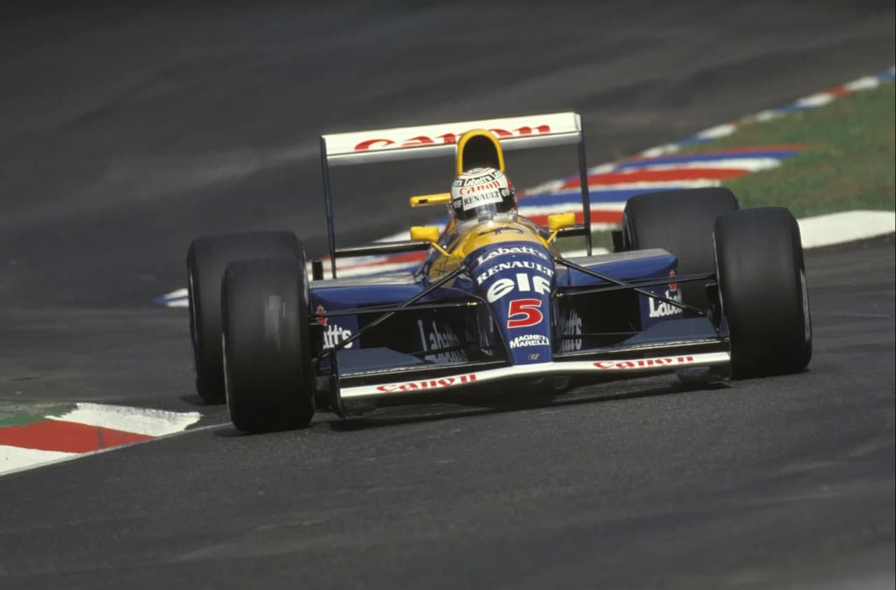
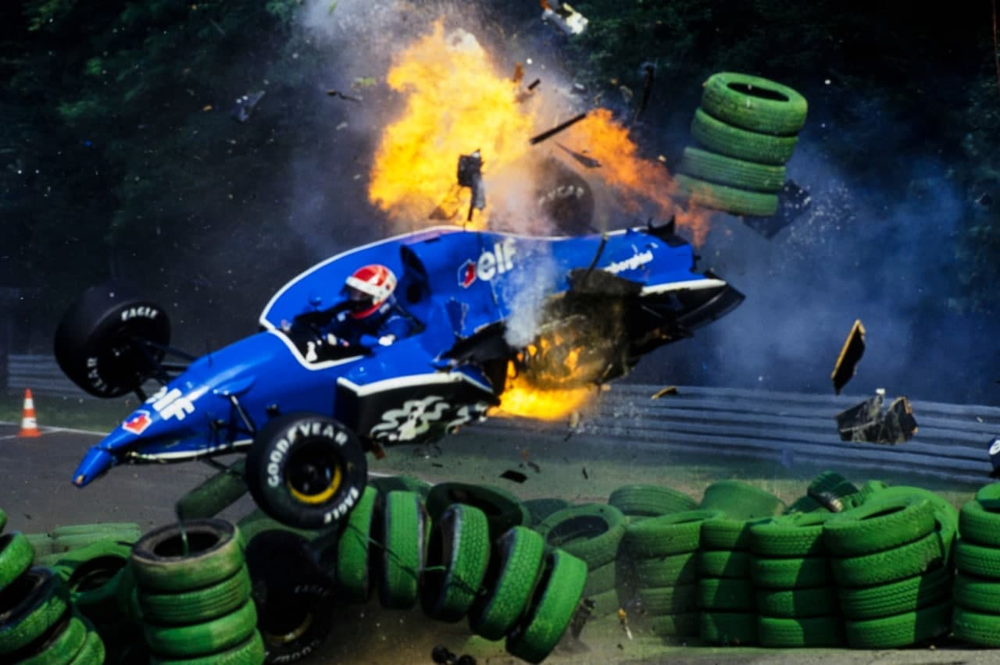
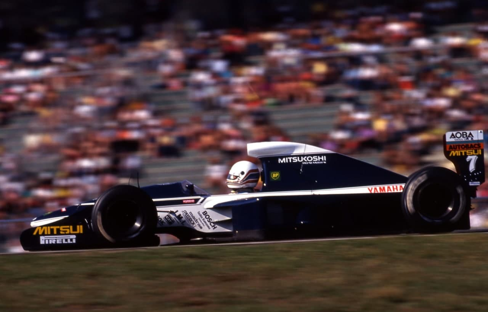
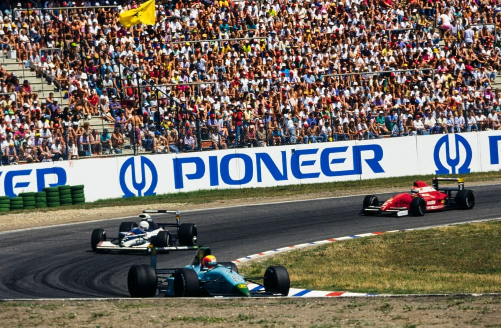
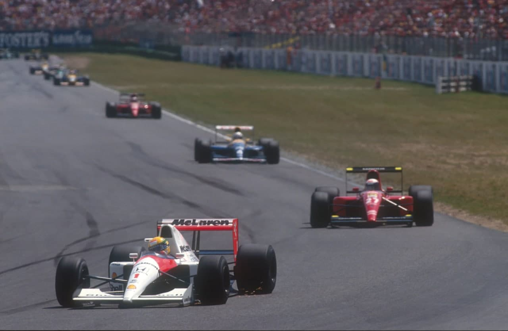
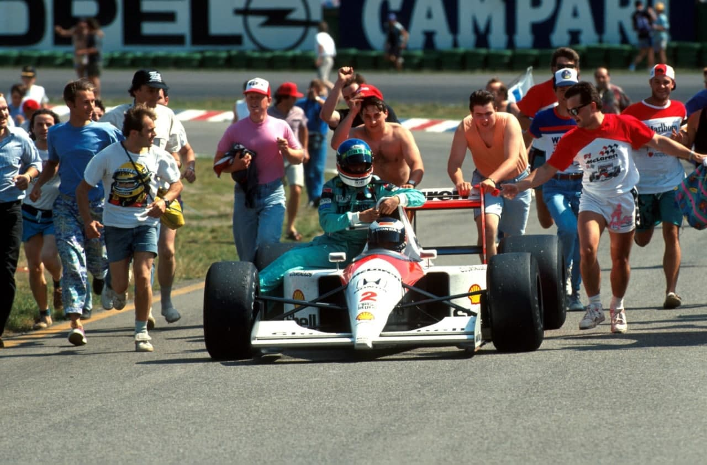
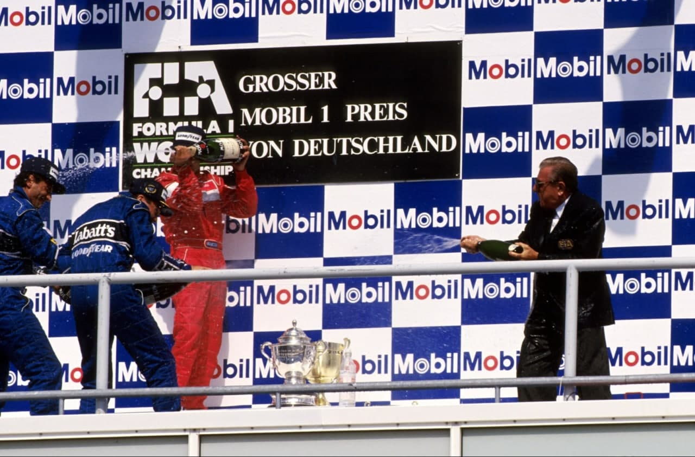

Hockenheim - 28/07/1991
Williams 4 x 4 Ayrton

"Hat-trick” de Mansell em dobradinha Williams, que lidera mundial. Alesi, sem parar, é 3º. Ayrton para na última volta sem gasolina. Prosi abandona em incidente com Senna. De novo, ambas Jordan nos pontos. Piquet e Gugelmin abandonam. Moreno, 8º. Acidente violento de Comas
Por Francisco Santos
Quatro seguidas, sem dar a mínima chance a ninguém. Quase que parecia a mesma estória do início do ano com outros personagens... Só que agora é de verdade mesmo. Esta hegemonia Williams/Renault é pra valer. Pela primeira vez desde 1987, quando Nelson Piquet foi tricampeão, a equipe Williams lidera o campeonato. Nigel Mansell conquistou a sua terceira vitória consecutiva, pela primeira vez na sua carreira. A diferença para Ayrton Senna, que era de 34 pontos em Monte Carlo, baixou agora para 8 pontos. Com ainda sete corridas pela frente, e com os problemas que a McLaren enfrenta. Já dá para pensar no título...
Pela segunda vez consecutiva Ayrton para na última volta com falta de gasolina, o mesmo acontecendo de novo com Berger, mas depois da bandeirada. Não bastasse a competitividade das Williams/Renault, as McLaren/Honda atravessam grave "crise de consciência", caindo em repetidas armadilhas na apressada busca de encontrarem solução para outros problemas não resolvidos no devido tempo. Jean Alesi liderou pela primeira vez uma corrida na Ferrari e, graças a uma inteligente opção por pneus duros para não parar foi terceiro, enquanto Prost caiu no seu próprio jogo no passado e abandonou na chicane depois de longa perseguição a Senna, e de ter tentado passá-lo em terrenos de audácia que ele, "professor", não conhece. Berger foi quarto depois de perseguir Ayrton nas últimas voltas.

Triste memória
Hockenheim é das pistas mais curiosas que conheço. E das mais idiotas. Encravada no meio de belas
florestas, o circuito inicialmente edificado em 1932 e usado até 1950 apenas para motos, começou então a
receber os Mercedes de F1 para testes. Tinha o dobro dos seus quase nove km atuais. Quando foi
encurtado, ficou parecendo que fizeram um circuito (Stadium), mas que ficou com pouca extensão, e que
então tiveram de inventar duas longas reta através da
floresta, uma para ida, outra para retorno ao Stadium apenas para completar distância.
Um miolo com curvas no meio de duas grandiosas arquibancadas envolventes, tipo arena, e duas longas
retas pela floresta. "Perigoso e chato", como Thierry Boutsen muito bem classifica. Sobretudo perigoso.
Não canso de recordar esse 7 de abril de 1968 quando a meu lado, na sala de imprensa de Brands Hatch,
durante os "BOAC 10000 km". um colega de Fleet Street fica petrificado ao telefone quando da redação lhe
contam que Jim Clark acabara de morrer num acidente numa das retas de Hockenheim. Clark devia estar ali
em Brands, mas preferiu correr nas Eiffelrenen. Por motivos fiscais, ele vivia fora da Grã-Bretanha e
por isso só podia estar na "Ilha" um máximo de 30 dias por ano. Para não gastar mais quatro dos seus
dias permitidos a não residentes preferiu correr em Hockenheim.
Em 1980 Patrick Depailler pereceu num acidente durante testes com o Alfa Romeo. Em 1982 a carreira de
Didier Pironi acabou no terrível acidente na chuva.
Ao longo dos anos foram brotando as chicanes, as zebras, os corretores, para diminuir a velocidade, mas
mesmo assim ainda se atingem médias superiores a 236km/h! Com a força do "Partido Verde" na Alemanha
fica difícil mudar o traçado desta pista, já que para qualquer alteração seria necessário derrubar
árvores. Infelizmente o novo Nurburgring não foi bem aceito.
Nos testes FOCA, uma semana antes, Ayrton sofreu um acidente espetacular na Chicane 1; nos treinos de
qualificação de sábado, Erik Comas testou a falta de segurança desta pista ao ter uma saída violenta na
Ostkurve.

Turma nova, velhos reprovados
Com o início de uma nova metade do campeonato, mudaram as equipes sujeitas às pré-qualificações. Mas, o panorama continuou o mesmo, com domínio esmagador de uma equipe com motor mais potente (Yamaha V12) e pneus Pirelli, invariavelmente melhores em qualificação. Para Pedro Chaves as coisas mantiveram-se tão difíceis quanto antes, tanto mais que a Coloni continua ausente dos testes FOCA, não possibilitando o acerto do carro nem o treino do piloto em pistas novas. Na desconhecida Hockenheim, Pedro ainda enfrentou a troca da bomba de gasolina que o fez perder tempo precioso para aprender a pista. Claro que fez o pior tempo. Brundle foi o mais rápido, 1s melhor que Tarquini, mais rápido do que habitual, usando uma nova evolução do DFR Mader, enquanto Alboreto e Blundell passavam. Caffi, sem treino (não sentava num F1 desde o acidente de Mônaco) não teve chance.

Treinos, só deu Mansell
Melhor tempo em todas as cinco sessões. Que mais querem? Não há nada para ninguém. Nem vale a pena referir mais nada, pois Mansell dominou quando e como quis. Graças a uma nova gasolina Shell, Senna teve uma performance até melhor do que esperava, mas não deu para se aproximar mais de Mansell do que 0,19s. Berger conseguia a terceira posição no grid, enquanto as Ferrari ficavam a uns humilhantes 2s de Mansell. Hakkinen teve uma saída violenta na primeira curva, no início do primeiro treino. Gugelmin viu o seu excelente 10º tempo de 6ª feira anulado pois a caixa do lastro de 5kg para os carros que não transportam as câmaras de TV era da medida errada (tem de ser 38x72x160mm) e estava transversal em vez de longitudinal. O grande caso dos treinos foi Comas. Aliás um caso duplo. Aos 5 minutos do treino livre de sábado, o Ligier/Lamborghini derrapou em alta velocidade na entrada da Ostkurve, foi catapultado pelas zebras, caiu violentamente sobre a suspensão esquerda, bateu de lado na barreira de pneus, foi de novo catapultado no ar, e aterrissou de rodas no ar, com o capacete de Erik Comas raspando o solo. O piloto saiu ileso, mas foi transportado para o hospital de Manheim para observação depois do que foi liberado para voltar à pista. Nos momentos finais da última qualificação conseguiu um lugar no grid, mas não sabendo disso, continuou a acelerar, ficando no caminho de Mansell numa volta rápida. Manteve o pé em baixo, mas mesmo assim obstruiu o "leão", que ficou furioso. No warm-up Prost conseguiu acertar o carro com pouco apoio aerodinâmico e foi batido só por Mansell, com Ayrton em terceiro, já mais animado.

Williams: "estranhas" na largada
Da pole, Mansell saiu bem, com um pouco de aceleração a mais. Sua largada foi "estranha", muito
semelhante ao do Estoril em 1989 (com Prost a seu lado), atravessando toda a pista para o outro lado,
bloqueando Senna, ou pelo menos entrando na sua faixa de rolagem.
Ao final da primeira volta já levava 1,3s de vantagem, não sobre Senna, nem sobre Patrese, mas sim
sobre Berger. Mais uma vez Patrese estragou sua largada, e caiu para 6º. Quem fez pior foram Larini e
Blundell, que saíram da pista logo na entrada da primeira curva. Hakkinen tem de ir ao box na segunda
volta, com um cone em um radiador.
Ne frente, Mansell e Berger, separados à 5ª volta por 2,5s. Berger afastava-se de Senna, que já tinha
Prost no seu câmbio. Alesi já havia sido passado por Patrese, mas pouco lhe importava. Havia decidido
usar uma regulagem muito diferente de Prost, apostando de forma diferente: pneus duros para fazer toda
a prova sem parar.
Mansell conseguia afastar-se de Berger, que é o primeiro a trocar de pneus à 14ª volta, com uma parada
desastrosa da McLaren (16,14s), caindo para 10º. Quem estava mal de pneus eram as Benetton:
Não conseguia andar cinco voltas seguidas, que parecia estar sobre gelo. Tinha de fazer duas voltas
rápidas e uma lenta, para recuperar aderência,
lembrou Nelson Piquet.
Na 17ª volta, Ayrton e Prost juntos, chegam ao final da volta a velocidade de quem quer continuar, mas no
último momento Ayrton entra para o box. Prost, apesar de surpreendido, consegue no entanto também
entrar. A grande esperança do francês era conseguir sair antes de Senna, passá-lo no box, já que na
pista estava difícil. Foi uma corrida das duas equipes de mecânicos: Senna ficou parado apenas 6,83s, e conseguiu ainda sair
na frente de Prost, que de imediato gruda na sua traseira. E ali se manteve durante vinte voltas. Mesmo
depois que Patrese, de pneus novos, e decidido a atacar a fundo depois de um início de prova cauteloso,
sem ritmo, os ter passado com relativa facilidade.
Volta após volta, a Ferrari, com menos apoio aerodinâmico, encostava na McLaren nas freadas para as
chicanes, mas nunca conseguia aquela vantagem que lhe permitisse reivindicar a prioridade na curva.
Chegava a colocar-se ao lado da McLaren, mas foi só.

Final ridículo
Na 37ª volta, as duas Williams já estavam em dobradinha na frente, e aí ficariam até final. Na
volta seguinte, Prost consegue sair melhor do que nunca da primeira curva, bem no vácuo da McLaren, sai
para a esquerda, emparelha, e tenta passar Ayrton por fora na entrada da primeira chicane. Claro que
Ayrton tinha freado ainda mais tarde do que habitual e feito uma aproximação mais por fora, defendendo
bem a sua linha. Não deu outra: Prost saiu em frente, para a escapatória pois, com a sua manobra, ficou
sem espaço para curvar, a não ser que batesse em Ayrton. o que, justiça lhe seja feita, não ousou, ao
contrário de outros que o teriam feito. Sem a menor dúvida que a prioridade não era dele, convínhamos,
santa ingenuidade para um "professor" que devia conhecer melhor o seu "colega" de outros episódios
semelhantes, mas em circunstâncias diversas. Claro que Prost "meteu a boca no trombone", como sempre faz
nas suas "birras" Com isto De Cesaris entrava nos pontos, depois de uma prova fulgurante. E na última
volta, também Gachot subia um lugar, Senna parava com... falta de gasolina. Era demais, depois de
Magny-Cours e, principalmente, de Silverstone. Um total de seis pontos perdidos.
Que importa, isso não é nada comparado com a inferioridade com que estamos,
vociferava Ayrton ao voltar aos boxes, possesso de raiva, enquanto Mansell festejava no pódio sua recuperação no campeonato e a liderança da Williams.
Mais tarde, embora apreensivo com a situação muito desfavorável, Senna analisava o momento difícil:
Se
as Williams continuarem assim o campeonato vai mesmo acabar mais cedo. Para nós não há mais nada a fazer
do que continuar trabalhando em busca de soluções que diminuam essa desvantagem. A diferença é muito
grande, e mesmo a Ferrari é mais rápida do que nós.
Berger, à semelhança de Silverstone, também ficava sem gasolina depois da bandeirada. Furioso, pelos
16s que perdera no box. Sem isso poderia ter sido segundo. Quem estava feliz por ter acertado na sua
aposta era Jean Alesi, terceiro, segundo pódio na Ferrari.
Piquet parou com câmbio quebrado, o mesmo acontecendo com Gugelmin. Moreno depois de muitos problemas
com os pneus conseguiu chegar em oitavo.
